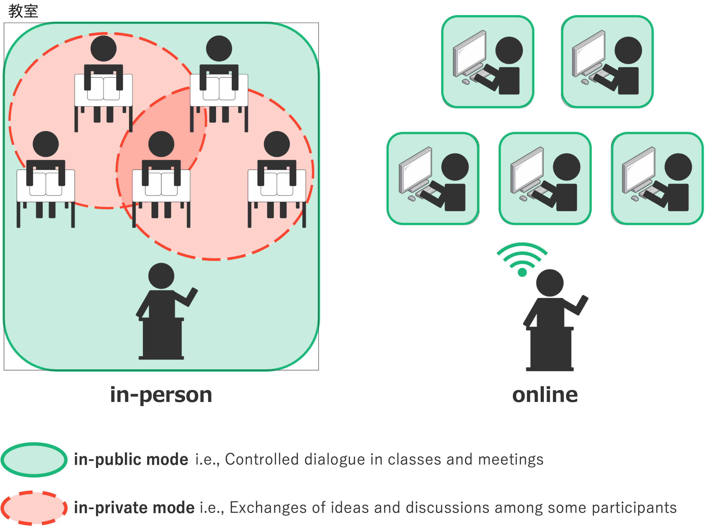
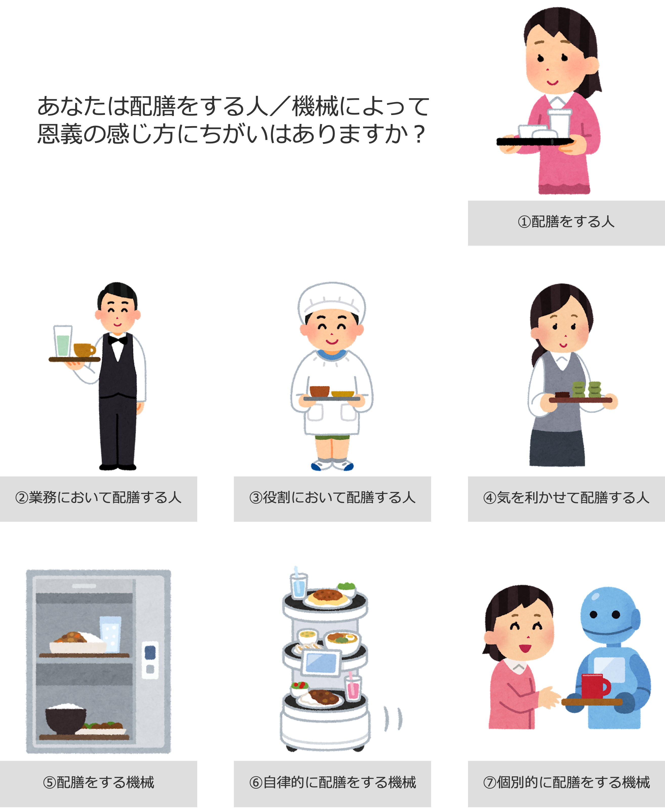

研究紹介
人と人／人と人工物のコミュニケーションに調和する情報システムをデザインしています
# computer mediated communication (CMC)
# computer supported collaborative learning/working (CSCL/CSCW)
# human-computer interaction (HCI)
# human-agent interaction (HAI)

1. 多重参与を実現するオンラインコミュニケーション環境の開発と評価
一般に対面状況における教室やオフィスでは，授業や会議の進行のために公然と行われる対話（in-public mode）と， その聞き手となる参加者同士で内々に行われる対話（in-private mode）とを同時に存在させることができます（図左）． このように一つの空間に複数の対話が点在している状況では， 参加者たちは公然と行われる対話を聞くだけでなく，複数の対話に掛け持ちして参加（多重参与）することができます． 参加者みずからが主体となって近くの人と意見交換をしたり，それらを傍観・傍聴したりすることで他者の発想や価値観に触れることができ， 結果として，授業や会議全体のコミュニケーションにおける創造性や了解性が高まります． ところがオンライン環境では，その構造上，参加者が複数の対話に同時に所属することはできず， 上述したような参加者各個を主体とした対話が生じづらいことは私たちも経験的に理解していますし，学術的にも多く指摘されています（図右）．そこで私は，オンライン環境においても参加者同士の内々な対話を実現するために， 複数の対話への多重的な参与を可能とするオンライン対話環境の開発を目指しています． この研究は今後普及が見込まれているバーチャル空間での対話における環境のデザイン提案に役立てられることが期待されます． 教育や産業の現場など多人数が集うバーチャル空間でのコミュニケーションの促進を通して， それらに従事する人たちの創造性や了解性の向上に寄与します．

2. エージェントによる自律的な援助に対する被援助者の心理的負債感を低減させるHAIデザイン
人は他人から援助や恩義を受けたと感じるとき，その相手に対して「恩返しをしなくてはならない」という気持ちになることがあります． 一般に恩義を受けた人（被援助者）は恩義を与えてくれた人（援助者）との関係や自身の社会的立場の低下を防ぐために，受けた恩と同程度の返報をしたりお礼を言ったりします． しかし医療や介護の現場では，被援助者が援助者に対して十分な返報ができないことで負債感や罪悪感を蓄積させてしまい， 結果として自身の希望や不満を伝えることを遠慮したり，援助を受けることに消極的になったりすることが問題になっています．ところで人は，まるで人のような知的な受け答えをしたり，自律的な振る舞ったりする人工物（エージェント）に対して無意識的に人とみなして接しています． これまでの研究では人が人工物に対して敬語を使ったり，返報をしたり，お礼を言ったりすることが報告されています． もちろん機械や人工物は人を支援する存在として設計されおり，私たちも意識的にはそれを理解していますが， それと同時に私たちはそれら人工物から一方的に援助を受ける立場であり，それに対して恩義を感じてしまうのです． すると人はやがて，人を支援する人工物を忌避してしまう恐れがあり，その設計には工夫が必要であるといえます．
そこで私は，人がエージェントと気軽に接したり，良好な関係を築いたりすることを実現するために， 人がエージェントのことを何者として扱っているのか，そんなエージェントに求められる設計とは何かを探求しています． この研究はエージェントを含め今後ますます自律的かつ適応的にサービスを提供する人工物のデザイン指針に役立てられることが期待されます．